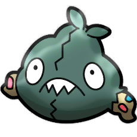

Trubbish Collector
This game cannot run on your browser... please try a different one.
How to Play
Use the arrow keys to move the Pokeball around the screen. Collect as many Trubbish  as you can before touching four Yungoos !
High Scores